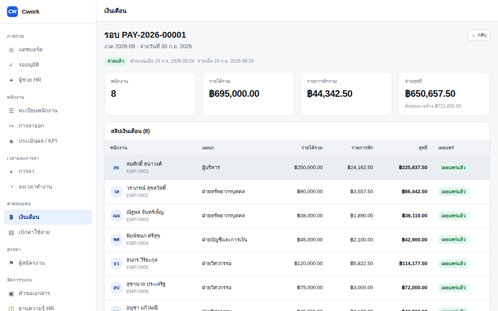
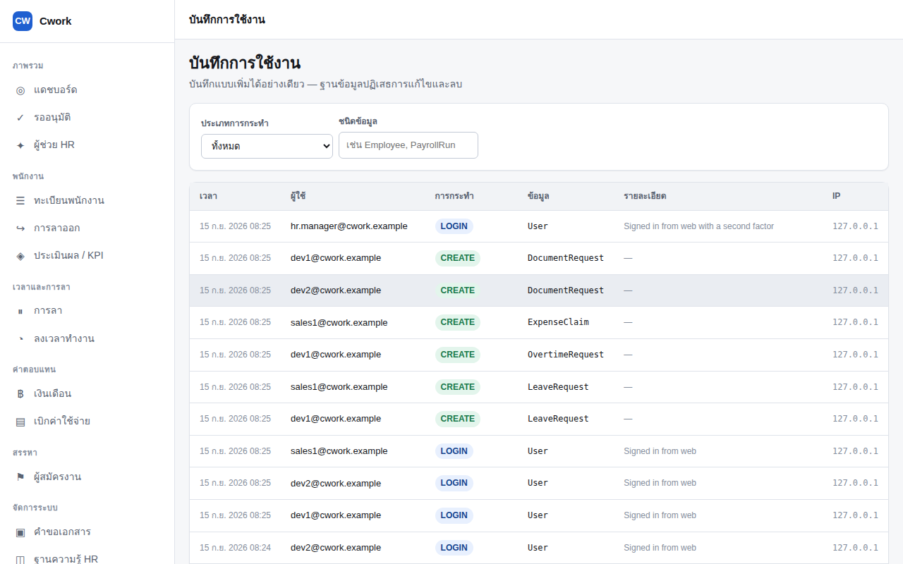

<title>Cwork HRIS</title>
<link rel="preconnect" href="https://fonts.googleapis.com">
<link rel="preconnect" href="https://fonts.gstatic.com" crossorigin>
<link rel="stylesheet" href="https://fonts.googleapis.com/css2?family=Bai+Jamjuree:wght@500;600;700&family=Sarabun:wght@300;400;500;600&family=IBM+Plex+Mono:wght@400;500&display=swap">

<style>
  /* ---------------------------------------------------------------- tokens
     Ground: ledger paper. Accent: the brass of an official seal — this is a
     payroll and documents product, and Thai officialdom runs on both. */
  :root {
    --paper:        #eef1ee;
    --surface:      #f8faf8;
    --surface-sunk: #e4e9e4;
    --ink:          #171b1a;
    --ink-soft:     #454e4b;
    --ink-faint:    #6e7874;
    --rule:         #cfd7d1;
    --rule-soft:    #dfe5e0;

    --brass:        #9a6b22;
    --brass-lift:   #b8822f;
    --brass-wash:   #f2e9d8;

    --ledger:       #2c5a4c;          /* verified / good */
    --ledger-wash:  #dfeae5;

    --term-bg:      #14181a;
    --term-ink:     #dfe6e2;
    --term-dim:     #7f8d87;
    --term-edge:    #2a3230;

    --shadow: 0 1px 2px rgb(23 27 26 / .05), 0 8px 24px -12px rgb(23 27 26 / .18);

    --step-1: clamp(.78rem, .76rem + .1vw, .82rem);
    --step0:  clamp(1rem, .97rem + .16vw, 1.08rem);
    --step1:  clamp(1.18rem, 1.1rem + .38vw, 1.4rem);
    --step2:  clamp(1.45rem, 1.28rem + .8vw, 1.95rem);
    --step3:  clamp(1.85rem, 1.5rem + 1.6vw, 2.9rem);
    --step4:  clamp(2.3rem, 1.6rem + 3.1vw, 4.2rem);

    --wrap: 1140px;
    --prose: 62ch;
  }

  @media (prefers-color-scheme: dark) {
    :root:not([data-theme="light"]) {
      --paper:        #101413;
      --surface:      #171c1a;
      --surface-sunk: #0b0f0e;
      --ink:          #e8edea;
      --ink-soft:     #b0bab5;
      --ink-faint:    #808c87;
      --rule:         #2a3230;
      --rule-soft:    #212826;

      --brass:        #d29a45;
      --brass-lift:   #e5ae57;
      --brass-wash:   #2a2113;

      --ledger:       #6fbfa4;
      --ledger-wash:  #14251f;

      --term-bg:      #0a0d0c;
      --term-ink:     #dfe6e2;
      --term-dim:     #6f7d77;
      --term-edge:    #39423f;

      --shadow: 0 1px 2px rgb(0 0 0 / .5), 0 10px 30px -14px rgb(0 0 0 / .7);
    }
  }

  :root[data-theme="dark"] {
    --paper:        #101413;
    --surface:      #171c1a;
    --surface-sunk: #0b0f0e;
    --ink:          #e8edea;
    --ink-soft:     #b0bab5;
    --ink-faint:    #808c87;
    --rule:         #2a3230;
    --rule-soft:    #212826;

    --brass:        #d29a45;
    --brass-lift:   #e5ae57;
    --brass-wash:   #2a2113;

    --ledger:       #6fbfa4;
    --ledger-wash:  #14251f;

    --term-bg:      #0a0d0c;
    --term-ink:     #dfe6e2;
    --term-dim:     #6f7d77;
    --term-edge:    #39423f;

    --shadow: 0 1px 2px rgb(0 0 0 / .5), 0 10px 30px -14px rgb(0 0 0 / .7);
  }

  /* ------------------------------------------------------------------ base */
  *, *::before, *::after { box-sizing: border-box; }

  body {
    margin: 0;
    background: var(--paper);
    color: var(--ink);
    font-family: "Sarabun", "Noto Sans Thai", system-ui, -apple-system, sans-serif;
    font-size: var(--step0);
    font-weight: 400;
    line-height: 1.72;
    -webkit-font-smoothing: antialiased;
  }

  h1, h2, h3, .display {
    font-family: "Bai Jamjuree", "Sarabun", system-ui, sans-serif;
    font-weight: 600;
    line-height: 1.22;
    text-wrap: balance;
    margin: 0;
    letter-spacing: -.005em;
  }

  a { color: inherit; }
  img, video { max-width: 100%; display: block; }
  code, kbd, .mono { font-family: "IBM Plex Mono", ui-monospace, "SFMono-Regular", monospace; }

  :focus-visible {
    outline: 2px solid var(--brass);
    outline-offset: 3px;
    border-radius: 2px;
  }

  .wrap {
    width: 100%;
    max-width: var(--wrap);
    margin-inline: auto;
    padding-inline: 20px;
  }

  section { padding-block: clamp(56px, 8vw, 104px); }

  /* The ledger rule: a heavy hairline over a light one, like ruled paper.
     It marks every section opening, so the page reads as one document. */
  .eyebrow {
    font-family: "IBM Plex Mono", monospace;
    font-size: var(--step-1);
    font-weight: 500;
    letter-spacing: .14em;
    text-transform: uppercase;
    color: var(--brass);
    display: block;
    margin-bottom: 14px;
  }
  .ruled { border-top: 2px solid var(--rule); padding-top: 4px; }
  .ruled::before {
    content: "";
    display: block;
    border-top: 1px solid var(--rule-soft);
    margin-bottom: 18px;
  }

  .lede {
    color: var(--ink-soft);
    font-size: var(--step1);
    font-weight: 300;
    max-width: var(--prose);
    margin: 18px 0 0;
  }

  /* ------------------------------------------------------------------- nav */
  header.bar {
    position: sticky;
    top: env(safe-area-inset-top, 0px);
    z-index: 50;
    background: color-mix(in srgb, var(--paper) 88%, transparent);
    backdrop-filter: blur(10px);
    border-bottom: 1px solid var(--rule-soft);
  }
  .bar__in {
    display: flex;
    align-items: center;
    gap: 24px;
    min-height: 60px;
    flex-wrap: wrap;
  }
  .brand { display: flex; align-items: center; gap: 10px; font-weight: 700; font-family: "Bai Jamjuree", sans-serif; letter-spacing: -.01em; }
  .brand__mark {
    width: 30px; height: 30px; border-radius: 7px;
    background: var(--brass); color: #fff;
    display: grid; place-items: center;
    font-size: .74rem; font-weight: 700; letter-spacing: .02em;
    font-family: "IBM Plex Mono", monospace;
  }
  .bar nav { display: flex; gap: 22px; margin-inline-start: auto; flex-wrap: wrap; }
  .bar nav a {
    text-decoration: none;
    color: var(--ink-soft);
    font-size: .93rem;
    padding-block: 6px;
    border-bottom: 1.5px solid transparent;
    transition: color .15s, border-color .15s;
  }
  .bar nav a:hover { color: var(--ink); border-bottom-color: var(--brass); }

  /* ----------------------------------------------------------------- hero */
  .hero { padding-block: clamp(44px, 7vw, 84px) clamp(40px, 6vw, 72px); }
  .hero h1 { font-size: var(--step4); font-weight: 700; letter-spacing: -.022em; max-width: 17ch; }
  .hero h1 em { font-style: normal; color: var(--brass); white-space: nowrap; }
  .hero__lede { max-width: 54ch; }

  .tagrow { display: flex; flex-wrap: wrap; gap: 8px; margin-bottom: 22px; }
  .tag {
    font-family: "IBM Plex Mono", monospace;
    font-size: .74rem;
    letter-spacing: .05em;
    text-transform: uppercase;
    padding: 4px 10px;
    border: 1px solid var(--rule);
    border-radius: 999px;
    color: var(--ink-faint);
    background: var(--surface);
  }
  .tag--live { color: var(--ledger); border-color: color-mix(in srgb, var(--ledger) 40%, var(--rule)); }

  .hero__grid {
    display: grid;
    grid-template-columns: minmax(0, 1.05fr) minmax(0, .95fr);
    gap: clamp(32px, 5vw, 64px);
    align-items: start;
  }

  /* The terminal is the hero image. The most characteristic thing about a
     self-hosted product is the command that installs it. */
  .term {
    min-width: 0;
    background: var(--term-bg);
    color: var(--term-ink);
    border-radius: 12px;
    border: 1px solid var(--term-edge);
    box-shadow: var(--shadow);
    overflow: hidden;
    font-family: "IBM Plex Mono", monospace;
    font-size: .845rem;
    line-height: 1.95;
  }
  .term__bar {
    display: flex; align-items: center; gap: 8px;
    padding: 9px 14px;
    border-bottom: 1px solid rgb(255 255 255 / .07);
    color: var(--term-dim);
    font-size: .72rem;
    letter-spacing: .06em;
  }
  .term__dot { width: 9px; height: 9px; border-radius: 50%; background: rgb(255 255 255 / .16); }
  .term__body { padding: 16px 18px 20px; overflow-x: auto; }
  .term__body p { margin: 0; white-space: pre; }
  .term .p { color: var(--brass-lift); }
  .term .c { color: var(--term-dim); }
  .term .ok { color: #7fc9ac; }

  .cta-row { display: flex; flex-wrap: wrap; gap: 12px; margin-top: 26px; }
  .btn {
    display: inline-flex; align-items: center; gap: 9px;
    padding: 12px 22px;
    border-radius: 8px;
    font-weight: 600;
    font-size: .96rem;
    text-decoration: none;
    border: 1px solid transparent;
    transition: transform .12s ease, background .15s, border-color .15s;
  }
  .btn:hover { transform: translateY(-1px); }
  .btn--primary { background: var(--brass); color: #fff; }
  .btn--primary:hover { background: var(--brass-lift); }
  .btn--ghost { border-color: var(--rule); color: var(--ink); background: var(--surface); }
  .btn--ghost:hover { border-color: var(--brass); }

  .facts {
    display: grid;
    grid-template-columns: repeat(auto-fit, minmax(120px, 1fr));
    gap: 1px;
    margin-top: 40px;
    background: var(--rule-soft);
    border: 1px solid var(--rule-soft);
    border-radius: 10px;
    overflow: hidden;
  }
  .fact { background: var(--surface); padding: 16px 18px; }
  .fact dt { font-size: .76rem; color: var(--ink-faint); letter-spacing: .03em; margin: 0 0 3px; }
  .fact dd {
    margin: 0;
    font-family: "IBM Plex Mono", "Sarabun", monospace;
    font-size: 1.22rem;
    font-weight: 500;
    font-variant-numeric: tabular-nums;
    color: var(--ink);
  }

  /* ----------------------------------------------------------------- demo */
  .demo { background: var(--surface-sunk); border-block: 1px solid var(--rule-soft); }
  .demo__frame {
    margin-top: 32px;
    border-radius: 12px;
    overflow: hidden;
    border: 1px solid var(--rule);
    box-shadow: var(--shadow);
    background: var(--term-bg);
  }
  .demo__cap { color: var(--ink-faint); font-size: .88rem; margin: 14px 0 0; }

  /* ------------------------------------------------------------- features */
  .head { max-width: var(--prose); }
  .head h2 { font-size: var(--step3); }

  .grid {
    display: grid;
    grid-template-columns: repeat(auto-fit, minmax(290px, 1fr));
    gap: 1px;
    margin-top: 44px;
    background: var(--rule-soft);
    border: 1px solid var(--rule-soft);
    border-radius: 12px;
    overflow: hidden;
  }
  .cell { background: var(--surface); padding: 28px 26px 30px; display: flex; flex-direction: column; gap: 10px; }
  .cell h3 { font-size: var(--step1); }
  .cell p { margin: 0; color: var(--ink-soft); font-size: .96rem; }
  .cell__key {
    font-family: "IBM Plex Mono", monospace;
    font-size: .72rem;
    letter-spacing: .1em;
    text-transform: uppercase;
    color: var(--brass);
  }
  .cell ul { margin: 4px 0 0; padding-inline-start: 1.05em; color: var(--ink-soft); font-size: .93rem; }
  .cell li { margin-bottom: 4px; }

  /* ----------------------------------------------------------------- pdpa */
  .split {
    display: grid;
    grid-template-columns: repeat(auto-fit, minmax(300px, 1fr));
    gap: clamp(28px, 4vw, 56px);
    align-items: start;
    margin-top: 40px;
  }
  .claims { list-style: none; margin: 0; padding: 0; display: grid; gap: 2px; }
  .claims li {
    display: grid;
    grid-template-columns: 22px 1fr;
    gap: 12px;
    padding: 14px 0;
    border-bottom: 1px solid var(--rule-soft);
    align-items: start;
  }
  .claims li:last-child { border-bottom: 0; }
  .claims svg { width: 18px; height: 18px; margin-top: 5px; color: var(--ledger); flex: none; }
  .claims strong { font-weight: 600; display: block; }
  .claims span { color: var(--ink-soft); font-size: .93rem; }

  .note {
    background: var(--brass-wash);
    border: 1px solid color-mix(in srgb, var(--brass) 26%, transparent);
    border-radius: 10px;
    padding: 20px 22px;
    font-size: .94rem;
    color: var(--ink-soft);
  }
  .note strong { color: var(--ink); }

  /* -------------------------------------------------------------- devices */
  .phones { display: flex; gap: 18px; flex-wrap: wrap; }
  .phones img {
    width: 186px;
    border-radius: 16px;
    border: 1px solid var(--rule);
    box-shadow: var(--shadow);
  }

  .shots { display: grid; grid-template-columns: repeat(auto-fit, minmax(280px, 1fr)); gap: 18px; margin-top: 40px; }
  .shot { border: 1px solid var(--rule); border-radius: 10px; overflow: hidden; background: var(--surface); }
  .shot img { width: 100%; }
  .shot figcaption { padding: 12px 15px; font-size: .86rem; color: var(--ink-faint); border-top: 1px solid var(--rule-soft); }

  /* -------------------------------------------------------------- install
     Numbered because this genuinely is a sequence: each step needs the one
     before it. */
  .steps { counter-reset: step; display: grid; gap: 22px; margin-top: 40px; max-width: 760px; }
  .step { display: grid; grid-template-columns: 38px minmax(0, 1fr); gap: 18px; align-items: start; }
  .step::before {
    counter-increment: step;
    content: counter(step);
    font-family: "IBM Plex Mono", monospace;
    font-size: .82rem;
    font-weight: 500;
    width: 34px; height: 34px;
    border-radius: 50%;
    border: 1.5px solid var(--brass);
    color: var(--brass);
    display: grid; place-items: center;
  }
  .step h3 { font-size: var(--step0); font-weight: 600; margin-bottom: 4px; }
  .step p { margin: 0 0 10px; color: var(--ink-soft); font-size: .94rem; }
  .cmd {
    max-width: 100%;
    background: var(--term-bg);
    color: var(--term-ink);
    font-family: "IBM Plex Mono", monospace;
    font-size: .82rem;
    padding: 12px 15px;
    border-radius: 8px;
    overflow-x: auto;
    white-space: pre;
  }
  .cmd .p { color: var(--brass-lift); }

  /* -------------------------------------------------------------- honesty */
  .honest { background: var(--surface-sunk); border-block: 1px solid var(--rule-soft); }
  .honest ul { margin: 26px 0 0; padding-inline-start: 1.1em; color: var(--ink-soft); max-width: var(--prose); }
  .honest li { margin-bottom: 9px; }

  /* --------------------------------------------------------------- footer */
  footer { border-top: 1px solid var(--rule-soft); padding-block: 40px 56px; }
  .foot { display: flex; flex-wrap: wrap; gap: 20px 40px; align-items: baseline; justify-content: space-between; }
  .foot a { color: var(--ink-soft); text-decoration: none; border-bottom: 1px solid var(--rule); }
  .foot a:hover { color: var(--brass); border-bottom-color: var(--brass); }
  .foot p { margin: 0; color: var(--ink-faint); font-size: .88rem; }

  @media (max-width: 860px) {
    .hero__grid { grid-template-columns: minmax(0, 1fr); }
    .bar nav { display: none; }
  }
  @media (prefers-reduced-motion: reduce) {
    * { animation-duration: .01ms !important; transition-duration: .01ms !important; }
  }
</style>

<header class="bar">
  <div class="wrap bar__in">
    <a class="brand" href="#top" style="text-decoration:none">
      <span class="brand__mark" aria-hidden="true">CW</span>
      <span>Cwork</span>
    </a>
    <nav aria-label="ส่วนต่าง ๆ ของหน้านี้">
      <a href="#features">ความสามารถ</a>
      <a href="#pdpa">PDPA</a>
      <a href="#app">แอปพนักงาน</a>
      <a href="#install">ติดตั้ง</a>
      <a href="https://github.com/SuruchBoss/Cwork">GitHub</a>
    </nav>
  </div>
</header>

<main id="top">

  <!-- ===================================================== hero -->
  <section class="hero">
    <div class="wrap">
      <div class="tagrow">
        <span class="tag">โอเพนซอร์ส · Apache-2.0</span>
        <span class="tag tag--live">v0.2.0 · เผยแพร่แล้ว</span>
        <span class="tag">สำหรับแรงงานไทย</span>
      </div>

      <div class="hero__grid">
        <div>
          <h1>ระบบ HR ที่อยู่บน<br>เซิร์ฟเวอร์<em>ของคุณเอง</em></h1>
          <p class="lede hero__lede">
            ทะเบียนพนักงาน วันลา ลงเวลา และเงินเดือน ครบในระบบเดียว
            ข้อมูลอยู่ในฐานข้อมูลที่คุณถือกุญแจ ไม่มีค่ารายหัว ไม่มีสัญญารายปี
            และไม่มีอะไรออกจากเครื่องคุณจนกว่าคุณจะสั่ง
          </p>

          <div class="cta-row">
            <a class="btn btn--primary" href="#install">
              ติดตั้งใน 5 นาที
              <svg width="15" height="15" viewBox="0 0 24 24" fill="none" stroke="currentColor" stroke-width="2.2" aria-hidden="true"><path d="M5 12h14M13 6l6 6-6 6"/></svg>
            </a>
            <a class="btn btn--ghost" href="https://github.com/SuruchBoss/Cwork">ดูซอร์สโค้ดบน GitHub</a>
          </div>

          <dl class="facts">
            <div class="fact"><dt>ค่าลิขสิทธิ์ต่อผู้ใช้</dt><dd>฿0</dd></div>
            <div class="fact"><dt>ชุดทดสอบอัตโนมัติ</dt><dd>508</dd></div>
            <div class="fact"><dt>บริการที่ต้องดูแล</dt><dd>1</dd></div>
          </dl>
        </div>

        <div class="term" role="img" aria-label="ตัวอย่างการติดตั้งด้วย docker compose สามคำสั่ง จบด้วยการสร้างองค์กรและผู้ดูแลคนแรก">
          <div class="term__bar">
            <span class="term__dot"></span><span class="term__dot"></span><span class="term__dot"></span>
            <span style="margin-inline-start:6px">เซิร์ฟเวอร์ของคุณ</span>
          </div>
          <div class="term__body">
<p><span class="c"># ดึงโค้ดและสตาร์ท</span></p>
<p><span class="p">$</span> git clone https://github.com/SuruchBoss/Cwork.git</p>
<p><span class="p">$</span> docker compose up -d --build</p>
<p>&nbsp;</p>
<p><span class="c"># สร้างองค์กรและผู้ดูแลคนแรก</span></p>
<p><span class="p">$</span> npm run db:init</p>
<p>&nbsp;</p>
<p><span class="c">  ชื่อองค์กร:</span> บริษัท ตัวอย่าง จำกัด</p>
<p><span class="c">  เขตเวลา  :</span> Asia/Bangkok</p>
<p><span class="c">  อีเมลผู้ดูแล:</span> owner@example.co.th</p>
<p>&nbsp;</p>
<p><span class="ok">  ✓</span> องค์กร · 8 บทบาท · ผู้ดูแล 1 บัญชี</p>
<p><span class="c">  ไม่มีข้อมูลตัวอย่างให้ต้องตามลบ</span></p>
          </div>
        </div>
      </div>
    </div>
  </section>

  <!-- ===================================================== demo -->
  <section class="demo">
    <div class="wrap">
      <div class="head">
        <span class="eyebrow ruled">ของจริง ไม่ใช่ภาพจำลอง</span>
        <h2>สามสิบหกวินาที ตั้งแต่เข้าระบบจนถึงรอบเงินเดือนที่ปิดแล้ว</h2>
        <p class="lede">
          คลิปนี้ถูกอัดจากระบบจริงที่รันอยู่ ด้วยสคริปต์ที่อยู่ในรีโพ
          รวมถึงการยืนยันตัวตนสองขั้นตอนที่ไม่ได้ข้ามไป
          ถ้าหน้าจอไหนพัง คลิปก็อัดไม่ผ่าน
        </p>
      </div>
      <div class="demo__frame">
        <video src="assets/walkthrough.mp4" autoplay muted loop playsinline
               poster="assets/dashboard.png"
               aria-label="วิดีโอสาธิตการใช้งานคอนโซล Cwork"></video>
      </div>
      <p class="demo__cap">หน้าจอเป็นภาษาไทย คำบรรยายในคลิปเป็นภาษาอังกฤษสำหรับผู้ที่ไม่อ่านไทย</p>
    </div>
  </section>

  <!-- ===================================================== features -->
  <section id="features">
    <div class="wrap">
      <div class="head">
        <span class="eyebrow ruled">ความสามารถ</span>
        <h2>ครบตั้งแต่วันแรกที่พนักงานเข้า จนถึงวันที่เขาลาออก</h2>
      </div>

      <div class="grid">
        <div class="cell">
          <span class="cell__key">เงินเดือน</span>
          <h3>คำนวณตามกฎไทย ไม่ใช่กฎที่ดัดแปลงมา</h3>
          <p>ภาษีหัก ณ ที่จ่ายแบบขั้นบันได ประกันสังคม กองทุนสำรองเลี้ยงชีพ และอัตราโอทีตาม พ.ร.บ. คุ้มครองแรงงาน</p>
          <ul>
            <li>สลิปอธิบายที่มาของทุกตัวเลขได้แม้ผ่านไปหนึ่งปี</li>
            <li>แยกให้เห็นว่าอะไรคือเงินสมทบฝั่งนายจ้าง ไม่ได้หักจากพนักงาน</li>
            <li>เงินเดือนรายเดือนไม่ถูกหารตามจำนวนวันที่มีข้อมูลลงเวลา</li>
          </ul>
        </div>

        <div class="cell">
          <span class="cell__key">การลา</span>
          <h3>ยอดวันลาที่เชื่อถือได้จริง</h3>
          <p>ประเภทการลาตามกฎหมายไทย สะสมตามอายุงาน ลาครึ่งวันและลาเป็นชั่วโมงได้</p>
          <ul>
            <li>คำขอที่ยังไม่อนุมัติ <strong>กันวันไว้ทันที</strong> สองคำขอที่ทับกันจึงแย่งวันเดียวกันไม่ได้</li>
            <li>วันหยุดนักขัตฤกษ์ถูกตัดออกจากการนับอัตโนมัติ</li>
          </ul>
        </div>

        <div class="cell">
          <span class="cell__key">ลงเวลา</span>
          <h3>Geofence ที่ไม่กันคนเข้างาน</h3>
          <p>ลงเวลาเข้า-ออกพร้อมพิกัดและการตรวจจับความผิดปกติ ตารางกะ และการแก้ไขเวลาย้อนหลังที่มีร่องรอย</p>
          <ul>
            <li>ลงเวลานอกพื้นที่จะถูก <em>ติดธง</em> ไม่ใช่ถูกปฏิเสธ — คนมาทำงานจริงต้องลงเวลาได้เสมอ</li>
            <li>HR ตรวจธงทีหลัง แทนที่จะให้พนักงานยืนเถียงกับโทรศัพท์</li>
          </ul>
        </div>

        <div class="cell">
          <span class="cell__key">การอนุมัติ</span>
          <h3>เอนจินเดียว ใช้กับทุกเรื่อง</h3>
          <p>ลา โอที เบิกค่าใช้จ่าย แก้ไขเวลา ลาออก คำขออัตรากำลัง ใบเสนอจ้าง รอบเงินเดือน และคำขอเอกสาร</p>
          <ul>
            <li>กำหนดผู้อนุมัติจากหัวหน้าสายงาน หัวหน้าแผนก บทบาท หรือระบุตัวบุคคล</li>
            <li>ตั้งเงื่อนไขได้ เช่น วงเงินเกินเท่าไรถึงต้องผ่านอีกขั้น</li>
          </ul>
        </div>

        <div class="cell">
          <span class="cell__key">สรรหา</span>
          <h3>หน้าสมัครงานสาธารณะ พร้อมความยินยอม</h3>
          <p>ตั้งแต่คำขออัตรากำลัง ประกาศงาน แบบทดสอบที่ตรวจอัตโนมัติ สัมภาษณ์ ไปจนถึงใบเสนอจ้างที่แปลงเป็นข้อมูลพนักงานได้เลย</p>
          <ul>
            <li>ใบสมัครที่ไม่มีความยินยอม PDPA ถูกปฏิเสธที่ระดับโค้ด ไม่ใช่แค่ติ๊กในฟอร์ม</li>
            <li>ข้อมูลผู้สมัครที่ไม่ได้รับเข้าทำงานถูกลบอัตโนมัติใน 12 เดือน</li>
          </ul>
        </div>

        <div class="cell">
          <span class="cell__key">ประเมินผล</span>
          <h3>KPI ถ่วงน้ำหนักและการปรับเทียบ</h3>
          <p>รอบประเมินที่มีการตั้งเป้า เช็คอินระหว่างทาง ประเมินตนเอง ประเมินโดยหัวหน้า และการปรับเทียบโดย HR</p>
          <ul>
            <li>น้ำหนัก KPI รวมกันเกิน 100 ไม่ได้ — มันคือตัวหารของคะแนน</li>
            <li>หัวหน้าที่ให้เกรดไม่สามารถปรับเทียบเกรดของตัวเองได้</li>
          </ul>
        </div>
      </div>
    </div>
  </section>

  <!-- ===================================================== pdpa -->
  <section id="pdpa" class="demo">
    <div class="wrap">
      <div class="head">
        <span class="eyebrow ruled">PDPA</span>
        <h2>ระบบ HR เก็บข้อมูลอ่อนไหวที่สุดในบริษัท</h2>
        <p class="lede">
          เลขบัตรประชาชน เลขบัญชีธนาคาร ประวัติการลาป่วย และพิกัดของพนักงาน
          Cwork ออกแบบโดยถือว่าสิ่งเหล่านี้เป็นภาระ ไม่ใช่สินทรัพย์
        </p>
      </div>

      <div class="split">
        <ul class="claims">
          <li>
            <svg viewBox="0 0 24 24" fill="none" stroke="currentColor" stroke-width="2.4" aria-hidden="true"><path d="M20 6 9 17l-5-5"/></svg>
            <div>
              <strong>พิกัดบันทึกเฉพาะตอนกดลงเวลา</strong>
              <span>ไม่มีการติดตามตำแหน่งระหว่างวัน ไม่ทำงานเบื้องหลัง และไม่มีการบันทึกพิกัดในเวลาอื่นใดทั้งสิ้น</span>
            </div>
          </li>
          <li>
            <svg viewBox="0 0 24 24" fill="none" stroke="currentColor" stroke-width="2.4" aria-hidden="true"><path d="M20 6 9 17l-5-5"/></svg>
            <div>
              <strong>เลขบัตรประชาชนและเลขบัญชีเข้ารหัสในฐานข้อมูล</strong>
              <span>AES-256-GCM · ฝ่ายบุคคลเห็นเพียงสี่หลักท้าย เว้นแต่จะเปิดดูเต็มโดยเจตนา ซึ่งการเปิดดูนั้นถูกบันทึกไว้</span>
            </div>
          </li>
          <li>
            <svg viewBox="0 0 24 24" fill="none" stroke="currentColor" stroke-width="2.4" aria-hidden="true"><path d="M20 6 9 17l-5-5"/></svg>
            <div>
              <strong>มีเอกสารระยะเวลาเก็บและขั้นตอนลบข้อมูลจริง</strong>
              <span>พร้อมแบบร่างประกาศความเป็นส่วนตัวภาษาไทยสำหรับแจกพนักงาน และขั้นตอน SQL ที่ทดสอบกับฐานข้อมูลจริงมาแล้ว</span>
            </div>
          </li>
          <li>
            <svg viewBox="0 0 24 24" fill="none" stroke="currentColor" stroke-width="2.4" aria-hidden="true"><path d="M20 6 9 17l-5-5"/></svg>
            <div>
              <strong>ไม่มีข้อมูลออกนอกเครื่องโดยค่าตั้งต้น</strong>
              <span>อีเมล แจ้งเตือนมือถือ ผู้ช่วย AI และที่เก็บไฟล์ภายนอก ปิดทั้งหมดจนกว่าคุณจะเปิดเอง</span>
            </div>
          </li>
        </ul>

        <div class="note">
          <strong>ข้อที่เราบอกตรง ๆ:</strong>
          ระบบยังไม่ลบข้อมูลพนักงานให้อัตโนมัติเมื่อครบกำหนด — ผู้ดูแลต้องกำหนดนโยบายและลงมือเอง
          เอกสารบอกไว้ว่าต้องทำอย่างไร ทีละขั้น รวมถึงข้อเท็จจริงที่ไม่สวย เช่น
          <strong>พนักงานที่เคยลงเวลาแล้วจะลบออกจากฐานข้อมูลไม่ได้</strong>
          เพราะตารางลงเวลาถูกล็อกให้เขียนเพิ่มได้อย่างเดียว วิธีที่ถูกคือลบข้อมูลระบุตัวตนออก แล้วเก็บเวลาทำงานไว้
          <br><br>
          <a href="https://github.com/SuruchBoss/Cwork/blob/main/docs/privacy.md" style="color:var(--brass);font-weight:600">อ่านเอกสารข้อมูลส่วนบุคคลฉบับเต็ม →</a>
        </div>
      </div>
    </div>
  </section>

  <!-- ===================================================== security -->
  <section>
    <div class="wrap">
      <div class="head">
        <span class="eyebrow ruled">ความปลอดภัย</span>
        <h2>กฎที่ผู้ดูแลระบบก็แหกไม่ได้</h2>
      </div>

      <div class="grid">
        <div class="cell">
          <span class="cell__key">บันทึกการใช้งาน</span>
          <h3>แก้ประวัติย้อนหลังไม่ได้</h3>
          <p>ตาราง audit log และตารางลงเวลาถูกล็อกที่ระดับฐานข้อมูล — ทริกเกอร์จะโยน exception ทันทีที่มีคำสั่ง UPDATE หรือ DELETE บัญชีแอปที่ถูกยึดจึงเพิ่มรายการได้ แต่ลบของเก่าไม่ได้</p>
        </div>
        <div class="cell">
          <span class="cell__key">สิทธิ์สูง</span>
          <h3>รหัสผ่านอย่างเดียวเข้าไม่ได้</h3>
          <p>ใครที่อ่านเลขบัตรประชาชนได้ ทำเงินเดือนได้ หรือแจกสิทธิ์ได้ ต้องมีปัจจัยที่สอง และรหัส TOTP หนึ่งตัวใช้ซ้ำไม่ได้แม้จะยังไม่หมดอายุ</p>
        </div>
        <div class="cell">
          <span class="cell__key">แบ่งแยกหน้าที่</span>
          <h3>คนเตรียมรอบเงินเดือน อนุมัติเองไม่ได้</h3>
          <p>ระบบปฏิเสธที่ระดับโค้ด ไม่ใช่นโยบายบนกระดาษ — เจ้าหน้าที่เงินเดือนเตรียม ผู้จัดการ HR เซ็นอนุมัติ</p>
        </div>
        <div class="cell">
          <span class="cell__key">ไฟล์อัปโหลด</span>
          <h3>สแกนก่อนเก็บ ไม่ใช่หลังเก็บ</h3>
          <p>เรซูเม่จากหน้าสมัครงานสาธารณะคือข้อมูลที่ไว้ใจได้น้อยที่สุด ไฟล์ถูกส่งไปสแกนก่อน และสแกนเนอร์ที่ใช้งานไม่ได้ไม่เคยแปลว่า "ผ่าน"</p>
        </div>
        <div class="cell">
          <span class="cell__key">การติดตั้งครั้งแรก</span>
          <h3>ระบบใหม่ไม่ตกเป็นของคนที่มาถึงก่อน</h3>
          <p>ผู้ดูแลคนแรกสร้างได้สองทางเท่านั้น: คำสั่งที่ต้องมี shell บนเซิร์ฟเวอร์ หรือหน้าเว็บที่ถือโทเคนใช้ครั้งเดียวซึ่งมีแต่คำสั่งนั้นออกให้ได้</p>
        </div>
        <div class="cell">
          <span class="cell__key">ผู้ช่วย AI</span>
          <h3>ถามแทนคนอื่นไม่ได้</h3>
          <p>เครื่องมือทุกตัวของผู้ช่วยไม่รับรหัสพนักงานเป็นพารามิเตอร์ แต่อ่านจากตัวตนของผู้ถามเสมอ ต่อให้โมเดลถูกหลอกสำเร็จก็เห็นได้แค่สิ่งที่คนนั้นเห็นอยู่แล้ว (และปิดเป็นค่าตั้งต้น)</p>
        </div>
      </div>

      <div class="shots">
        <figure class="shot" style="margin:0">
          
          <figcaption>รอบเงินเดือนที่ปิดแล้ว พร้อมสลิปรายคน</figcaption>
        </figure>
        <figure class="shot" style="margin:0">
          
          <figcaption>บันทึกการใช้งานที่ลบไม่ได้</figcaption>
        </figure>
      </div>
    </div>
  </section>

  <!-- ===================================================== app -->
  <section id="app" class="demo">
    <div class="wrap">
      <div class="split">
        <div>
          <span class="eyebrow ruled">แอปพนักงาน</span>
          <h2 style="font-size:var(--step3)">ออกแบบมาสำหรับโทรศัพท์ที่สัญญาณหลุด</h2>
          <p class="lede">
            ไซต์ก่อสร้าง ห้องเย็น ชั้นใต้ดินของห้าง — ที่ที่พนักงานต้องลงเวลาจริง
            มักเป็นที่ที่เน็ตไม่มี
          </p>
          <ul class="claims" style="margin-top:26px">
            <li>
              <svg viewBox="0 0 24 24" fill="none" stroke="currentColor" stroke-width="2.4" aria-hidden="true"><path d="M20 6 9 17l-5-5"/></svg>
              <div>
                <strong>ลงเวลาตอนออฟไลน์ได้</strong>
                <span>คิวถูกเก็บไว้ในหน่วยความจำถาวรของเครื่อง แล้วส่งใหม่เมื่อกลับมาออนไลน์</span>
              </div>
            </li>
            <li>
              <svg viewBox="0 0 24 24" fill="none" stroke="currentColor" stroke-width="2.4" aria-hidden="true"><path d="M20 6 9 17l-5-5"/></svg>
              <div>
                <strong>ส่งซ้ำไม่กลายเป็นลงเวลาสองครั้ง</strong>
                <span>ทุกรายการแนบรหัสที่สร้างจากฝั่งเครื่อง เซิร์ฟเวอร์จึงรู้ว่าอันไหนซ้ำ</span>
              </div>
            </li>
            <li>
              <svg viewBox="0 0 24 24" fill="none" stroke="currentColor" stroke-width="2.4" aria-hidden="true"><path d="M20 6 9 17l-5-5"/></svg>
              <div>
                <strong>ดูสลิป ขอลา และอนุมัติได้ในเครื่องเดียว</strong>
                <span>หัวหน้างานกดอนุมัติจากมือถือได้ ไม่ต้องรอกลับไปเปิดคอม</span>
              </div>
            </li>
          </ul>
        </div>
        <div class="phones" aria-label="ภาพหน้าจอแอปพนักงานบนโทรศัพท์">
          
          
        </div>
      </div>
    </div>
  </section>

  <!-- ===================================================== install -->
  <section id="install">
    <div class="wrap">
      <div class="head">
        <span class="eyebrow ruled">ติดตั้ง</span>
        <h2>ไม่มี Redis ไม่มี message broker ไม่มี Kubernetes</h2>
        <p class="lede">
          งานที่ปกติต้องใช้คิว lock server และ cache — PostgreSQL ตัวเดียวทำให้ทั้งหมด
          ระบบ HR ที่ต้องมีคลัสเตอร์ Kafka เพื่อส่งแจ้งเตือนการลา คือระบบที่ไม่มีใครติดตั้งใช้เองได้
        </p>
      </div>

      <div class="steps">
        <div class="step">
          <div>
            <h3>เตรียมเครื่องและความลับ</h3>
            <p>ต้องการ Docker และ PostgreSQL 16 เท่านั้น compose จะไม่ยอมสตาร์ทถ้ายังไม่ได้ตั้งค่าคีย์</p>
            <div class="cmd"><span class="p">$</span> cp .env.example .env
<span class="p">$</span> openssl rand -base64 48   <span style="color:var(--term-dim)"># JWT secrets</span>
<span class="p">$</span> openssl rand -base64 32   <span style="color:var(--term-dim)"># คีย์เข้ารหัสข้อมูล</span></div>
          </div>
        </div>
        <div class="step">
          <div>
            <h3>สตาร์ทและรันไมเกรชัน</h3>
            <p>ขั้นนี้ยังไม่มีข้อมูลอะไรในระบบ</p>
            <div class="cmd"><span class="p">$</span> docker compose up -d --build
<span class="p">$</span> docker compose run --rm --build migrate</div>
          </div>
        </div>
        <div class="step">
          <div>
            <h3>เลือกทางที่ใช่</h3>
            <p><strong>ลองดูก่อน</strong> — โหลดบริษัทตัวอย่างที่มีพนักงาน 8 คน รอบเงินเดือนที่ปิดแล้ว ใบลาที่รออนุมัติ และผู้สมัครงานกลางขั้นตอน ทุกหน้ามีของให้ดู</p>
            <div class="cmd"><span class="p">$</span> docker compose run --rm migrate npm run db:seed</div>
            <p style="margin-top:14px"><strong>ใช้งานจริง</strong> — สร้างองค์กรของคุณเอง หนึ่งองค์กร บทบาทระบบ 8 บทบาท ผู้ดูแลหนึ่งบัญชี ไม่มีข้อมูลตัวอย่างให้ต้องตามลบ</p>
            <div class="cmd"><span class="p">$</span> docker compose run --rm migrate npm run db:init</div>
          </div>
        </div>
        <div class="step">
          <div>
            <h3>เปิดใช้งาน</h3>
            <p>เข้าที่ <code>http://localhost:8080</code> — ผู้ดูแลคนแรกถือสิทธิ์ทั้งหมด ระบบจึงจะให้ตั้งค่ายืนยันตัวตนสองขั้นตอนก่อนเริ่มเซสชันแรก เตรียมแอป Authenticator ไว้</p>
          </div>
        </div>
      </div>

      <div class="cta-row" style="margin-top:38px">
        <a class="btn btn--primary" href="https://github.com/SuruchBoss/Cwork">เริ่มจาก GitHub</a>
        <a class="btn btn--ghost" href="https://github.com/SuruchBoss/Cwork/blob/main/README.th.md">อ่านคู่มือภาษาไทย</a>
      </div>
    </div>
  </section>

  <!-- ===================================================== honesty -->
  <section class="honest">
    <div class="wrap">
      <div class="head">
        <span class="eyebrow ruled">ก่อนตัดสินใจ</span>
        <h2>สิ่งที่ยังไม่พร้อม และเราไม่ซ่อนไว้</h2>
        <p class="lede">
          ซอฟต์แวร์ HR ที่โฆษณาว่าพร้อมทุกอย่างคือซอฟต์แวร์ที่ยังไม่มีใครเอาไปใช้จริง
          นี่คือรายการที่ควรอ่านก่อนเอาไปคำนวณเงินเดือนของคนจริง
        </p>
      </div>
      <ul>
        <li><strong>กฎภาษีและประกันสังคมยังไม่เคยผ่านการตรวจสอบจากผู้มีคุณวุฒิ</strong> — เขียนจากเอกสารสาธารณะและทดสอบกับตัวอย่างที่คำนวณด้วยมือ ซึ่งพิสูจน์ได้แค่ว่าโค้ดตรงกับที่ผู้เขียนเข้าใจ กรุณาตรวจตัวเลขกับของท่านเองก่อนใช้จริง</li>
        <li><strong>ยังไม่เคยผ่านการทดสอบเจาะระบบ</strong> — และยังไม่มีใครอ่านโค้ดทุกบรรทัดอย่างเป็นอิสระ</li>
        <li><strong>หน้าจอเป็นภาษาไทยอย่างเดียว</strong> — ภาษาอังกฤษอยู่ในแผนงาน ยังไม่ได้ทำ</li>
        <li><strong>ระยะเวลาเก็บข้อมูลต้องบังคับใช้เอง</strong> — ระบบลบข้อมูลผู้สมัครงานและเซสชันที่หมดอายุให้เอง ส่วนที่เหลือต้องกำหนดนโยบายและลงมือเอง โดยมีเอกสารบอกขั้นตอนไว้</li>
        <li><strong>ยังไม่มีการส่งออก ภ.ง.ด.1</strong> และเอกสารที่ออกให้ยังไม่ถูกแปลงเป็น PDF ให้อัตโนมัติ</li>
        <li><strong>หนึ่งการติดตั้งต่อหนึ่งองค์กร</strong> — ไม่ได้ออกแบบให้หลายบริษัทใช้ฐานข้อมูลร่วมกัน</li>
      </ul>
    </div>
  </section>

</main>

<footer>
  <div class="wrap foot">
    <div style="display:flex;gap:10px;align-items:center">
      <span class="brand__mark" aria-hidden="true">CW</span>
      <div>
        <p style="color:var(--ink);font-weight:600">Cwork</p>
        <p>โอเพนซอร์สภายใต้สัญญาอนุญาต Apache-2.0</p>
      </div>
    </div>
    <div style="display:flex;gap:22px;flex-wrap:wrap">
      <a href="https://github.com/SuruchBoss/Cwork">ซอร์สโค้ด</a>
      <a href="https://github.com/SuruchBoss/Cwork/blob/main/docs/privacy.md">ข้อมูลส่วนบุคคล</a>
      <a href="https://github.com/SuruchBoss/Cwork/blob/main/docs/security.md">ความปลอดภัย</a>
      <a href="https://github.com/SuruchBoss/Cwork/releases">เวอร์ชัน</a>
    </div>
  </div>
</footer>
